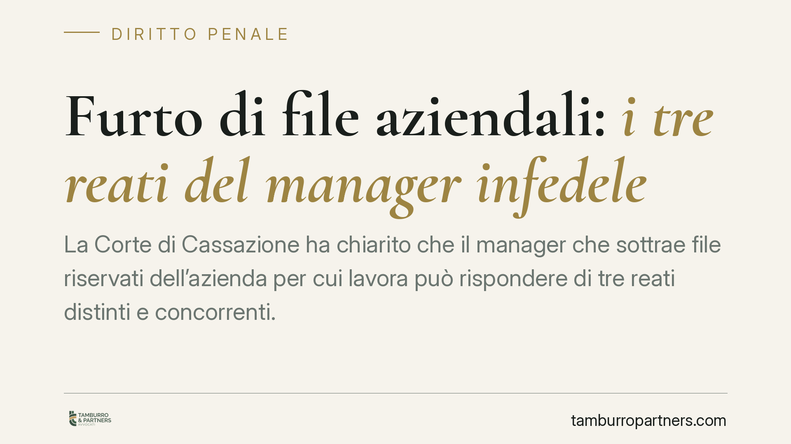

Furto di file aziendali: i tre reati del manager infedele
La Corte di Cassazione ha chiarito che il manager che sottrae file riservati dell'azienda per cui lavora può rispondere di tre reati distinti e concorrenti. Una pronuncia che alza l'asticella del rischio penale e impone alle imprese di rivedere le proprie misure di controllo sugli accessi ai dati sensibili e al know-how strategico.

Il caso
Un dirigente sottrae file riservati dell'azienda per cui lavora: elenchi clienti, progetti, informazioni tecniche. Li porta con sé, magari verso un concorrente o una nuova attività. Una condotta più diffusa di quanto si creda, e per lungo tempo trattata con leggerezza sul piano penale.
La Quinta Sezione Penale della Cassazione ha messo ordine: quel comportamento non integra un solo illecito, ma può dar luogo a tre reati che concorrono tra loro. La conseguenza è un aggravamento sensibile della posizione del soggetto agente.
Inquadramento normativo
Il primo profilo è l'appropriazione indebita (art. 646 del Codice penale). Il manager ha la disponibilità legittima dei dati in ragione del ruolo, ma se ne appropria distogliendoli dalla finalità aziendale e trattenendoli per sé. Non serve un furto in senso tecnico: basta che chi detiene legittimamente un bene lo trattenga come proprio, tradendo il vincolo che lo lega all'azienda.
Il secondo profilo è la rivelazione di segreti industriali (art. 623 del Codice penale). La norma tutela le informazioni destinate a rimanere riservate — processi produttivi, formule, strategie commerciali — di cui il soggetto sia venuto a conoscenza per ragione del proprio ufficio. Diffonderle o impiegarle a proprio vantaggio integra il reato.
Il terzo profilo è l'accesso abusivo a sistema informatico (art. 615-ter del Codice penale). Qui la Cassazione ha adottato una lettura rigorosa: commette il reato anche chi, pur avendo le credenziali, accede ai sistemi aziendali per finalità estranee a quelle per cui l'autorizzazione era stata concessa. L'abuso non sta nel superare una barriera tecnica, ma nel violare le condizioni d'uso poste dal titolare.
I tre reati, precisa la Corte, tutelano beni giuridici diversi — il patrimonio, la riservatezza industriale, l'integrità del sistema informatico — e per questo possono concorrere, sommando le rispettive sanzioni.
Implicazioni pratiche
Per il manager, la lettura della Cassazione significa che una singola condotta può generare responsabilità penali multiple, con pene che si cumulano. Non è più difendibile la tesi secondo cui "avevo le credenziali, quindi ero autorizzato": conta la finalità dell'accesso, non il possesso della password.
Per l'azienda, la sentenza offre uno strumento di tutela più solido, ma solo a una condizione: che l'impresa abbia predisposto regole chiare sugli accessi e sull'uso dei dati. Senza policy documentate, dimostrare l'abuso diventa difficile.
Il punto è decisivo. La riservatezza di un'informazione non si presume: va organizzata. Un dato lasciato accessibile a chiunque, senza restrizioni né classificazione, difficilmente potrà essere considerato "segreto" ai fini dell'art. 623.
Cosa fare in concreto
Per le imprese:
- Adottate una policy scritta sull'utilizzo dei sistemi informatici, definendo con precisione le finalità consentite per ciascun profilo di accesso.
- Classificate le informazioni riservate e limitate gli accessi in base al ruolo effettivo, applicando il principio del minimo privilegio.
- Tracciate gli accessi e le operazioni sui dati sensibili: i log costituiscono elemento probatorio essenziale in sede penale.
- Inserite nei contratti e nelle lettere di incarico clausole esplicite di riservatezza e obblighi di restituzione dei dati alla cessazione del rapporto.
- In presenza di sospetti, consigliamo di consolidare subito la prova documentale prima di ogni contestazione, evitando iniziative che possano compromettere l'integrità degli elementi raccolti.
Per chi ricopre ruoli dirigenziali: l'accesso ai dati aziendali va sempre ricondotto alle finalità del proprio incarico. Trattenere o utilizzare informazioni per scopi personali o per una successiva attività espone a conseguenze penali che questa pronuncia rende più gravi.
Conclusione
La decisione segna un orientamento severo. La sottrazione di file aziendali esce dalla zona grigia del contenzioso solo civilistico ed entra a pieno titolo nel perimetro penale, con un possibile concorso di reati. Per le aziende, la difesa più efficace resta la prevenzione: regole chiare, accessi controllati, prova documentale.
Contributo informativo a cura di Tamburro & Partners - Avv. Giuseppe Tamburro. Non costituisce parere legale.
Ogni condominio ha una storia a sé.
Se gestisci un'amministrazione e vuoi un confronto su una specifica questione condominiale, scrivi allo studio. Ti rispondiamo entro un giorno lavorativo.